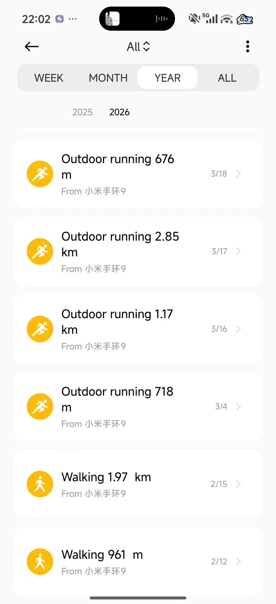
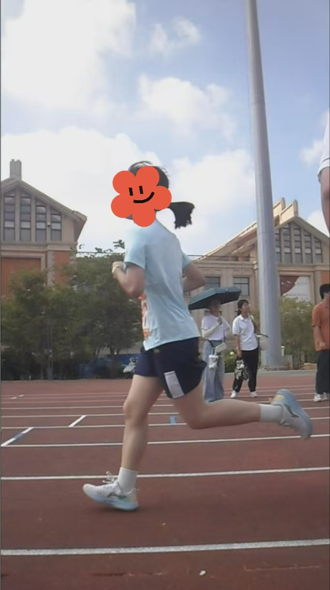

📝 内容策划与制作
深度掌握公众号、小红书及抖音的内容生态，能够独立产出并剪辑适配各平台调性的内容；同时精通 PPT 可视化表达，擅长将复杂信息转化为清晰、专业的结构化汇报方案，并持续交付高质量成果。
你好我是邓可欣，新乡学院在读，来自福建泉州，一个像小太阳一样、又肯埋头往前走的开发者。
目前就读于 新乡学院，专业为 光电信息科学与工程。我希望把内容表达、AI 工具、PPT 可视化和技术学习结合起来，持续积累属于自己的作品与经验。
高中阶段 · 班级管理与学生工作
光电信息科学与工程
深度掌握公众号、小红书及抖音的内容生态，能够独立产出并剪辑适配各平台调性的内容；同时精通 PPT 可视化表达，擅长将复杂信息转化为清晰、专业的结构化汇报方案，并持续交付高质量成果。
持有达摩院 AI 训练师认证资质，系统掌握人工智能基础原理、数据标注规范及模型训练全流程；能够熟练运用 AI 工具辅助内容创作与数据处理工作。
英语高考成绩达 120 分以上，拥有良好的英文阅读与写作能力，可胜任日常英语沟通场景。
PPT、Word、Excel、剪映
① 担任班长 / 数学课代表，协调班委团队并组织班会、学习活动 20+ 场，班级纪律与凝聚力显著提升，获“优秀学生干部”称号。
② 担任学生会心理社社长，开展健康心理等多场活动，帮助学生获得健康积极的求学道路，获“优秀社长”称号。
系统掌握 AI 基础原理、数据标注规范及模型训练流程，已完成达摩院 AI 训练师认证课程并通过考核；能够运用 AI 工具完成内容摘要生成与数据分类；搭建个人 AI 辅助工作流，实现内容选题与初稿生成的效率提升，有效缩短内容准备周期。
💡 高中阶段多次获得校级荣誉，具备扎实的学业基础与综合素养。
PRESENTATION WORKS · 自动轮播 / 点击切换
兴趣爱好 · 摄影。 我喜欢用镜头记录校园里的光、花与日常，把稍纵即逝的瞬间留成可以反复回看的画面。
HOBBY · PHOTOGRAPHY · 校园与日常左右切换浏览 · 点击照片可放大
兴趣爱好 · 长跑。不是为了速度，而是享受一次次把自己交给节奏、呼吸和路程的过程。
RUNNING · 校园与日常
RUNNING LOG
2026 · 日常跑步记录
KEEP MOVING
拍摄于学校长跑对我来说，是一种长期主义。哪怕每一次只往前一点，也是在积累属于自己的耐力和节奏。